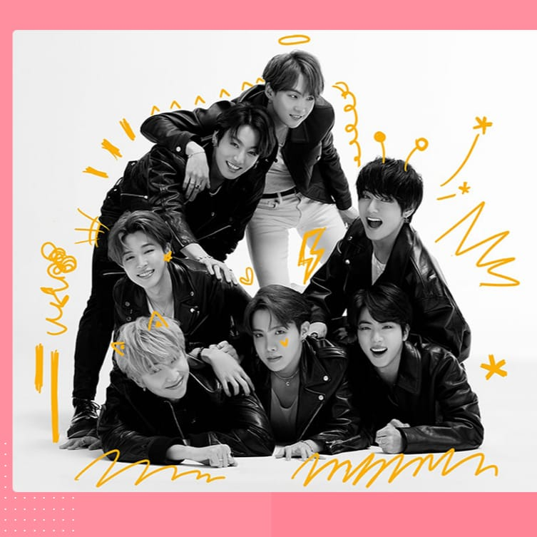

BTS an acconym of Bngtan Sonyeondon
or Beyound the Scene is the South Korean
boyband that is capturing the hearts of
millions of fans globally.
The members of BTS are gaining recognition from their
autentic, self-produced music and the main top-natch
performances to the way they interact with their
fans the
band is well an thier way to becoming our golobal icon
since htey debuted in june 2013. While
imparting a
top-natch
